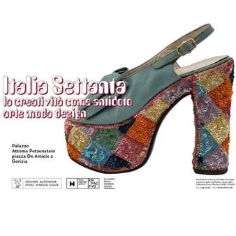

da sab 27 giu a dom 29 nov
“Italia Settanta. La creatività come antidoto. Arte Moda Design”
Dal 27 giugno, Palazzo Attems Petzenstein ospita il nuovo capitolo della grande serie espositiva dedicata alle trasformazioni culturali, sociali e creative del secondo dopoguerra, con la mostra “Italia Settanta. La creatività come antidoto. Arte Moda Design” L'esposizione…
 Indicazioni
Indicazioni
- Costi e prenotazioni
- Costo non indicato · Prenotazione non indicata
- Programma
- Programma da verificare. Apri la fonte ufficiale per orari e possibili aggiornamenti.
- In caso di maltempo
- Nessuna indicazione specifica pubblicata.
- Note
- Acquisito automaticamente dalla fonte.
L’EVENTO
Descrizione completa
Dal 27 giugno, Palazzo Attems Petzenstein ospita il nuovo capitolo della grande serie espositiva dedicata alle trasformazioni culturali, sociali e creative del secondo dopoguerra, con la mostra “Italia Settanta. La creatività come antidoto. Arte Moda Design”
L'esposizione, promossa dell’Ente Regionale per il Patrimonio Culturale del Friuli-Venezia Giulia – ERPAC FVG, rappresenta il nuovo, attesissimo tassello di un articolato percorso che, dopo il successo dei precedenti appuntamenti dedicati agli anni Cinquanta e Sessanta, continua a documentare le profonde trasformazioni della società italiana del secondo dopoguerra.
Il fulcro dell'indagine della mostra di Gorizia, curata da Raffaella Sgubin, Carla Cerutti, Lorenzo Michelli ed Enrico Minio Capucci e allestita dallo studio Roberto Festi, rimane l'affascinante e fitto dialogo tra i diversi linguaggi creativi — Arte, Moda e Design, appunto — mettendone in luce le affinità e le reciproche influenze sullo sfondo di un'epoca segnata da radicali mutamenti economici, politici e culturali.
Con questo ricco intreccio di storie, visioni e oggetti indimenticabili, la mostra a Palazzo Attems Petzenstein si propone non solo come un esercizio di memoria storica, ma come una chiave di lettura fondamentale per comprendere le radici della nostra contemporaneità.
La mostra sarà visitabile fino al 29 novembre nei seguenti orari:
da lunedì a domenica 9.00 – 19.00
giovedì – orario prolungato 9.00 – 22.00
Contatti: didatticamusei.erpac@regione.fvg.it / 0481 285335
Informazioni e tariffe QUI
In calendario anche eventi collaterali; per il mese di settembre QUI il programma
In questa nuova tappa, le arti visive affiancano gli altri ambiti assumendo valenza critica rispetto alle urgenze del periodo. Gli anni Settanta si distinguono infatti per la straordinaria pluralità dei linguaggi artistici e per il venir meno di una direzione unitaria della ricerca. Accanto alle esperienze concettuali, che privilegiano il progetto e l’idea, si sviluppano pratiche che analizzano criticamente i fondamenti della pittura, mentre altre invadono lo spazio attraverso installazioni e interventi ambientali. Tra memoria e sperimentazione, citazione e innovazione, il decennio ridefinisce profondamente i modelli del fare artistico. La selezione espositiva di arti visive – strutturata a partire dalle ambientazioni di moda e design - mette in relazione esperienze eterogenee: dagli echi della stagione Pop e delle ricerche degli anni Sessanta fino a pratiche che anticipano le sensibilità degli anni Ottanta, evidenziando continuità e trasformazioni all’interno di un quadro non lineare. Così, accanto a figure di riferimento come Alberto Burri e Afro, la sezione presenta protagonisti della ricerca pittorica e concettuale quali Gino De Dominicis, Giorgio Griffa, Rodolfo Aricò, Marco Gastini, Getulio Alviani, Carlo Ciussi e Lucio Saffaro. Nel corpo della mostra non poteva mancare Ugo Nespolo, con la sua linea dinamico/futurista e per questo citazionista, insieme a un'installazione di Michelangelo Pistoletto, che apre alla dimensione ambientale e relazionale dell’opera. Questa sezione evidenzia chiaramente il rapporto tra le arti visive e le altre discipline: mentre design e moda si concentrano sulla dimensione della quotidianità e della funzione, l’arte sviluppa percorsi orientati alla sperimentazione di nuovi linguaggi e alla definizione di modelli espressivi in costante mutamento.
Il mondo della moda vive nel medesimo decennio una rivoluzione epocale legata alla definitiva industrializzazione del settore. L'alto artigianato cede il passo al prêt-à-porter e la figura del sarto d'atelier viene sostituita da quella, modernissima, dello "stilista" termine coniato a definire Walter Albini. Milano si consacra come nuova capitale della moda e i grandi interpreti del Made in Italy dimostrano la capacità straordinaria di elevare la produzione di tipo industriale a livelli qualitativi eccelsi. La metamorfosi del costume si riflette in creazioni straordinarie, sospese tra moda e arte concettuale: ne è un esempio il cappotto-scultura Cretto di Roberto Capucci, che recepisce gli stimoli materici delle arti visive applicando elementi naturali insoliti sul tessuto come sassi, corda e bambù. Accanto alle geometrie e ai celebri accostamenti cromatici dei capi in maglieria firmati da Missoni, il guardaroba quotidiano si ridefinisce attraverso i generi e le forme, trovando nella giacca destrutturata di Giorgio Armani il simbolo intramontabile di una nuova eleganza urbana e fluida. Questa spinta al rinnovamento intercetta anche le istanze dei più giovani e della cultura underground grazie allo stile pop e dirompente di Elio Fiorucci, capace di trasformare i jeans e l'abbigliamento unisex in un fenomeno di costume globale.
Il design, dal canto suo, attraversa una stagione di eccezionale vitalità formale. Sulla scia delle grandi riflessioni sul nuovo panorama domestico, la produzione industriale sperimenta con audacia le materie plastiche, lasciando spazio a ironiche intuizioni visive. Emblematica di questa libertà espressiva è la monumentale poltrona Joe del trio De Pas-D'Urbino-Lomazzi, una seduta scultorea a forma di guantone da baseball che contesta apertamente il rigore del mobile tradizionale. Questa spinta iconoclasta convive con il design industriale più puro e rigoroso, attento alla tecnologia e alla funzionalità dell'ufficio e della casa, magistralmente interpretato dalla calcolatrice portatile Divisumma 18 disegnata da Mario Bellini per Olivetti, avvolta nella sua caratteristica e morbida membrana di gomma flessibile. Se la lampada Valigia di Ettore Sottsass jr esprime con la sua estetica geometrica l'idea di un design ironico e "nomade", pronto a seguire le evoluzioni degli spazi abitativi, la produzione industriale milanese si conferma il cuore pulsante del settore grazie a protagonisti del calibro di Joe Colombo, Vico Magistretti, Achille Castiglioni, Richard Sapper e Gae Aulenti. In contrapposizione a questa dimensione industriale, si palesa il desiderio di un ritorno alla natura, all’autoproduzione e all’uso di materiali poveri, come testimoniano i progetti di Enzo Mari e i mobili scultorei di Mario Ceroli. Un caso a parte è costituito dall’attività di Gabriella Crespi, creatrice di arredi sofisticati d’alto artigianato apprezzati da una ristretta clientela internazionale e oggi oggetto di grande riscoperta da parte dei collezionisti. La fine del decennio segna infine la transizione verso le provocazioni postmoderne: una stagione dominata dalla figura di Alessandro Mendini e dallo Studio Alchimia (fondato a Milano nel 1976 da Alessandro e Adriana Guerriero), che aprirà la strada alla straordinaria avventura del gruppo Memphis, creato da Ettore Sottsass nel 1981.
In stretto collegamento con la mostra goriziana, a Gradisca d’Isonzo, il progetto “FVG Settanta. Arti visive in Friuli Venezia Giulia negli anni ’70” della Galleria Regionale d’Arte Contemporanea “Luigi Spazzapan” riaccenderà i riflettori su un territorio — da Trieste a Udine, da Pordenone fino all'Isontino — che storicamente è stato un crocevia fondamentale di avanguardie artistiche.
IL PROGRAMMA
Programma e orari
Appuntamenti raccolti dalle fonti elencate. Dove manca un orario, non è ancora disponibile in questa scheda.
Programma pubblicato
- Dal 2026-06-27 al 2026-11-29
INFORMAZIONI UTILI
Prima di partire
- Controllare la fonte prima di partire.
ORGANIZZAZIONE